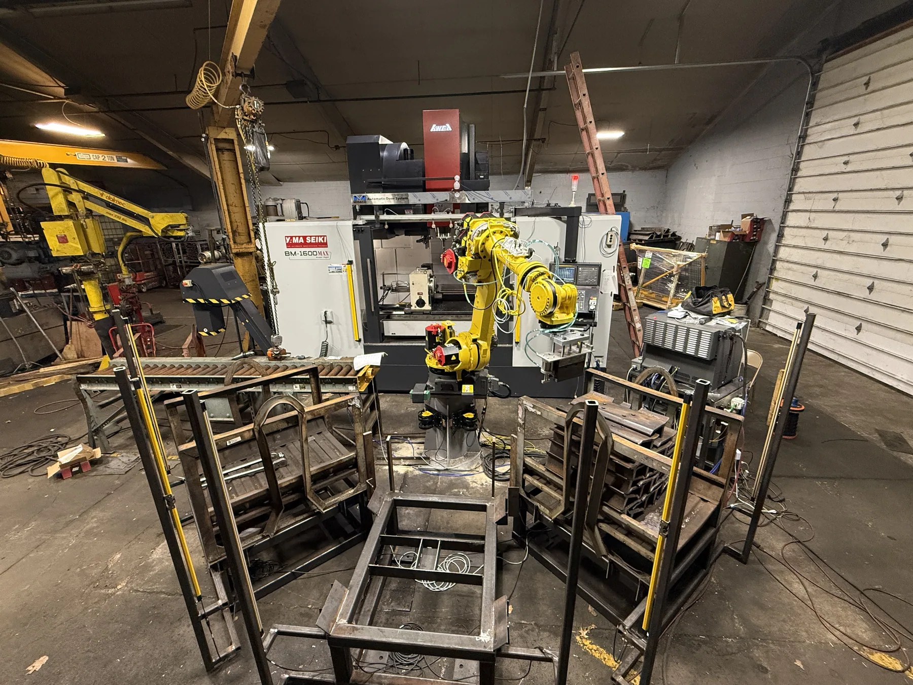

FANUC Robot & VMC Automated Manufacturing Cell
Programmed and helped set up an automated cell in which a FANUC R-1000iA/100F six-axis robot moves track shoes between material pickup, a Yama Seiki BM-1600MAX vertical machining center, and finished-part storage racks.
- Robot
- FANUC R-1000iA/100F — 6-axis, 100 kg payload, approx. 2,230 mm reach
- Machine tool
- Yama Seiki BM-1600MAX vertical machining center
- Software
- FANUC RoboGuide, FANUC teach pendant (TP), CAD, CAM
- Parts handled
- Track shoes — four sizes, each with its own routine
- My role
- Robot programming, position teaching, cycle development, PLC/sensor logic, end-of-arm tooling design
- Context
- Engineering Intern, Metamora Industries — May to Aug 2026

What the cell does
Track shoes are components used in tracked heavy equipment. In this cell, the robot handles them through the full machining loop: picking a raw shoe from the conveyor and material racks, loading it into the machining position inside the VMC, retrieving it after the operation, and placing it into finished-part storage.
The cell runs four different track shoe sizes. Each size has its own set of taught positions and its own robot routine, because the pick geometry, the load position inside the machine, and the rack placement all change with the part.
The engineering problem
A robot and a machining center are two independent machines that do not natively know anything about each other. Making them work as one cell means solving three things at once: the robot has to reach every position accurately and repeatably, the two machines have to exchange state so neither moves while the other is in the way, and the whole thing has to stay safe with people working nearby.
Track shoes make that harder than a generic pick-and-place. They are heavy, they come in four geometries, and the load position inside the machine has to be right or the part will not clamp correctly for the operation.
Teaching the cell to move
I mapped the robot motion for all four track shoe sizes and wrote separate routines for each. Building those routines meant teaching a large number of TP positions:
- Pickup positions at the conveyor and material racks
- Approach positions that stage the tooling before it commits to a move
- Perch and safe positions the robot can always retreat to
- VMC load and unload positions inside the machine envelope
- Rack locations for finished parts
- Travel positions linking the above without clipping surrounding equipment
I used FANUC RoboGuide for simulation, programming, position setup, and cycle development, then developed and tested the cycle on the real cell until the robot and the VMC communicated correctly and the sequence ran through properly.
Cycle and commissioning
Recorded during development of the cell. Audio has been removed.
Reading the cycle
The robot approaches the rack, takes the shoe on the magnet, indexes to a travel position clear of the surrounding steel, and enters the machine envelope to set the part in its machining position.
It then withdraws, waits, re-enters to retrieve the shoe, and returns it to storage. The machining operation itself is switched off here — the point of the recording is the motion, handoff, and clearance, not metal removal.
PLC logic and interlocks
My work included PLC ladder logic used to coordinate communication and information exchange between the robot, the VMC, and other equipment in the cell. The logic decides when each machine is allowed to move, and it depends on knowing the true state of the cell at every moment.
Devices integrated
- Light curtains and area sensors covering personnel access
- Part-presence sensors
- Machine-door sensors
- Safety sensors, interlocks, and machine-state signals
What the logic monitors
- Whether a part is present, and where
- Door positions on the machining center
- Personnel access into guarded areas
- Machine readiness and robot readiness before any handoff
- Whether overall conditions are safe to operate
The purpose of the sensor and PLC logic is to prevent unsafe operation and reduce the risk of collisions or accidents — the robot should not enter the machine while a door is moving, and nothing should cycle while someone has broken the light curtain.
Implementing these functions also meant physically tracing and working through the wiring inside the robot and VMC electrical control cabinets, following signals from the device back to the terminal to understand what the logic was actually reading.
Magnet, sensor, and piston
The robot picks track shoes with a magnet-based end effector. I worked on a system combining a magnet, a sensor, and a pneumatic piston, and designed a custom plate that mounts on top of the magnet and carries the piston and sensor alongside it. I created the CAD and the CAM needed to manufacture that plate.
I also modified the magnet holder. The original occupied too much space, so I shortened and redesigned it to reduce the tooling envelope, improve clearance, and lower the chance of collisions with surrounding equipment. On a cell this tight, every millimetre the tooling gives back is margin the robot can use.
Camera mount for the clamping check
A track shoe that is not seated and clamped correctly should never be machined. To catch that, a camera was positioned above the Yama Seiki VMC to record shoes during the loading and clamping process.
I designed and 3D printed the mount that holds that camera and supported getting it positioned correctly over the machine. The footage fed an AI computer-vision system that our team trained to determine whether the track shoe was properly clamped.
Scope note: the vision model itself was trained by the team. My documented contribution here is the CAD design of the mount, manufacturing it on a 3D printer, and supporting camera positioning and integration.
Equipment
- Robot
- FANUC R-1000iA/100F — six-axis industrial robot, 100 kg maximum payload, approximately 2,230 mm reach. FANUC lists the model for high-speed industrial applications including material handling.
- Machining center
- Yama Seiki BM-1600MAX — 1,600 mm X travel, 800 mm Y travel, 800 mm Z travel, 1,700 × 800 mm table, maximum table load approximately 2,000 kg (4,400 lb).
- Programming
- FANUC teach pendant (TP) programs, one routine per track shoe size; PLC ladder logic for cell coordination and interlocks.
- Simulation
- FANUC RoboGuide — layout, reach study, position setup, and cycle development.
Where it landed, and what I took from it
By the end of the work the robot and the VMC were communicating correctly and the automated sequence executed properly across the taught positions, with placement verified by repeated testing on production track shoes.
What I learned
- Simulation gets you close; the floor decides. RoboGuide was essential for laying out the cycle, but taught positions still had to be walked in and validated against real parts and real fixturing.
- Tooling envelope is a design constraint, not an afterthought. Shortening the magnet holder did more for reliable motion than any change I made to the paths themselves.
- Safety logic is where the cell actually becomes a system. Interlocks force you to write down every assumption about what the other machine is doing, which is exactly where integration bugs hide.
- Reading a wiring cabinet is a skill. Tracing a signal from a sensor back to a terminal made the ladder logic far less abstract.